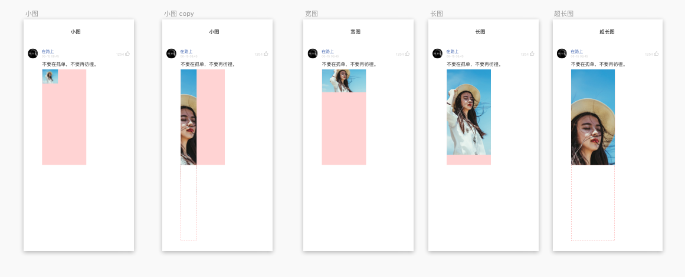
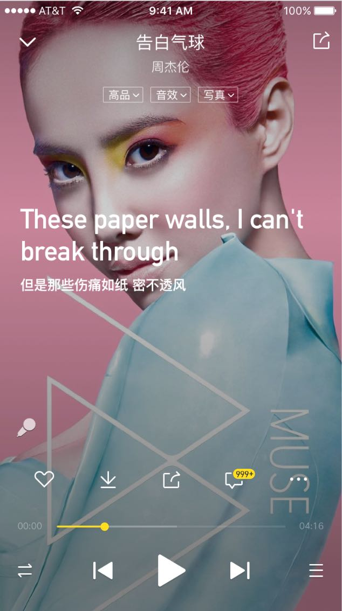
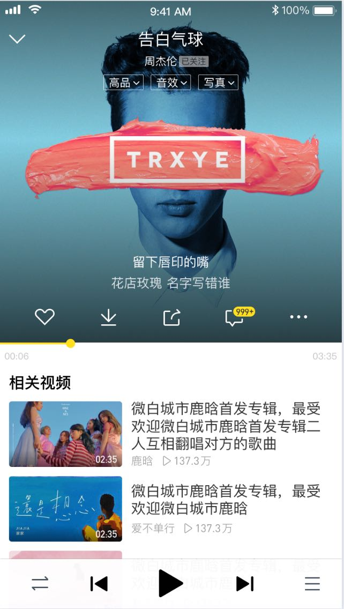

补充需求—评论区图片的缩略图展示逻辑
客户端改动：
1、当某条评论带图片时，服务端会在返回评论列表数据时，同时返回该图片缩略图的尺寸。客户端根据尺寸确定模块高度。
2、评论区加载缩略图时，服务端会在缩略图的url后方宽、高数值的后缀，客户端取到对应宽高比的缩略图，展示在评论区。
评论上传图片改一个接口
核心限制逻辑：
1、宽度最高为300px，高度最高为650px
2、缩略图未达到650px时，客户端下一条评论需要顶到图片底部，而不是固定按照650留白
针对各种图片的处理方式：
1、宽较高图——w>300且650<h≤6.5/3w，则宽度压缩到300px，高度等比例压缩
2、宽矮图——宽w>300且h＜650≤6.5/3w，则宽度压缩到300px，高度等比例压缩
3、窄高图——w≤300且h≤6.5/3w，则展示原图
4、宽高图——w>300且h>6.5/3w，则宽度压缩到300px，高度等比例压缩后，截取顶部650px
5、窄矮图——w≤300且650>h>6.5/3w，则展示原图
6、窄超高图——w≤300且h>650，则截取顶部650px
评论入口优化



写真模式视觉图
封面模式视觉图
-需求逻辑
当某个内容的评论数据达到999+时，对评论入口进行视觉强化，效果图如左图。
（播放器页面不跟换肤）
需求背景
评论整体体验存在一些问题，需要优化
当前主要优化两块：
1.优秀评论的入口强化
2.ios图片评论体验的优化